Once upon a time
I used CVS and SVN
I've forgotten everything about CVS and SVN
(almost)
Git is great...
Once you "get it"
Git Content Model
What does Git "track"?
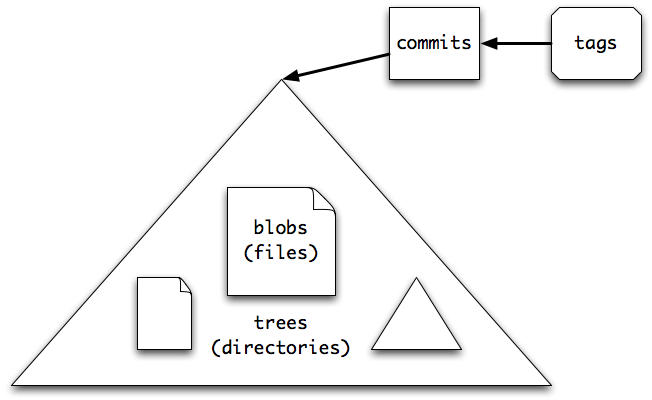
Workflow (Local)
- 1 - Create or edit content
- 2 - Add the content (to the "index")
- 3 - Commit (to the "repo")
- 4 - Rinse and Repeat
Workflow (Local)
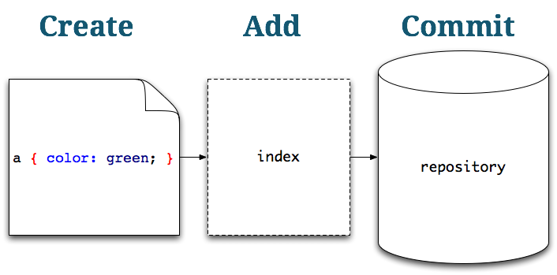
Commits form a history
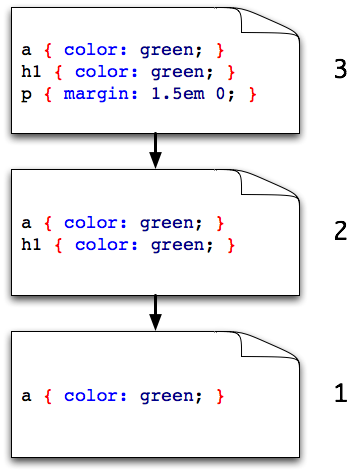
Each commit: has ID, points to "parent"
Commits happen on a "branch"
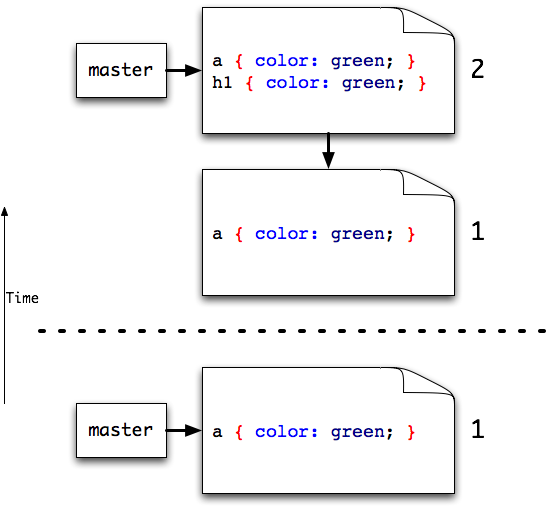
A branch is a pointer
You control which branch you are "on" when you make a commit
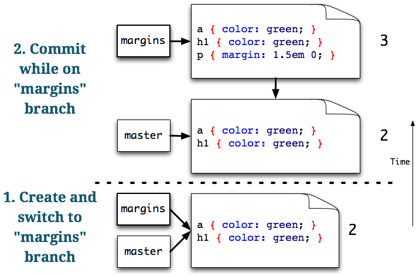
Huh?
Wireframing time!
Alice's Repo
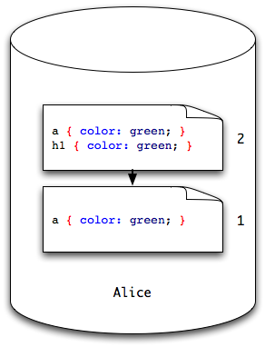
"Push" to a Remote Repo
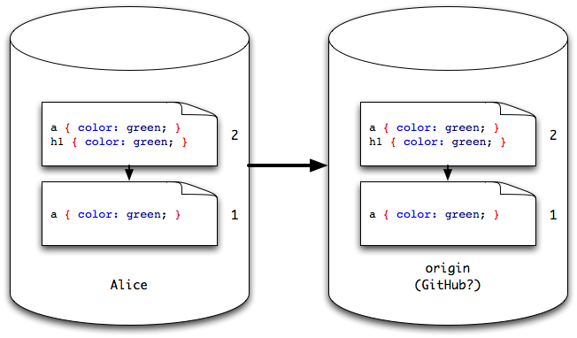
Collaboration can begin!
"Clone" a Repo
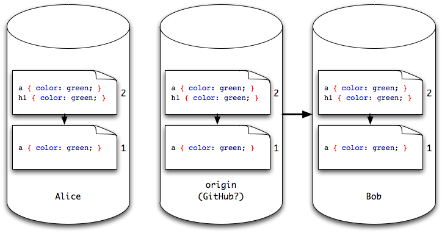
Gets a full, local copy for the first time
Bob makes a commit
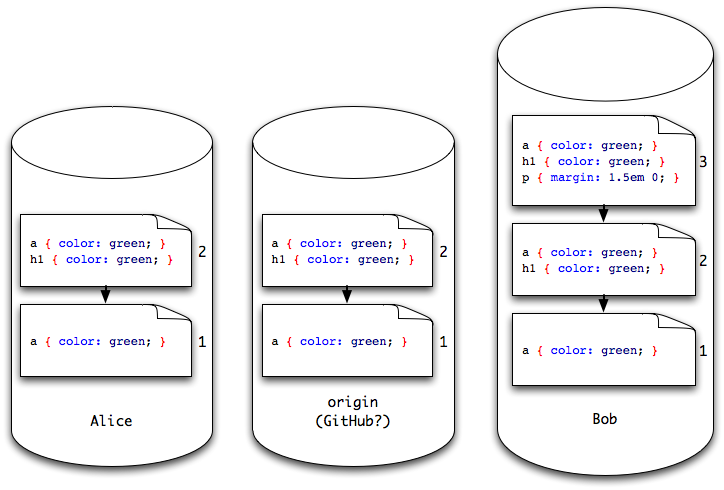
Bob pushes
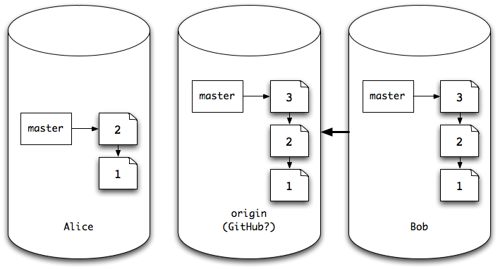
Alice "fetches" to see what's new
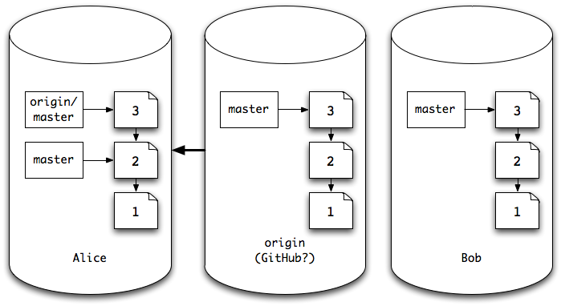
Fetch the commits I don't have and give me local copies
Alice needs to merge
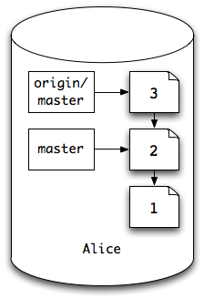
Merging is a difficult concept to fully grasp
origin/master is a local copy of a remote branch
origin/master is different from my master
Watch the wireframe!
Alice merges
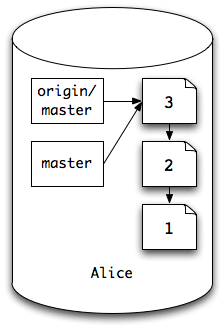
origin/master and master are now the same
Working copy now reflects state given by commit 3
i.e. the most up to date file
Multiple commits
State @ commit 3
a { color: green; }
h1 { color: green; }
p { margin: 1.5em 0; }Alice changes link color
a { color: red; }
h1 { color: green; }
p { margin: 1.5em 0; }Bob changes H1 color
a { color: green; }
h1 { color: red; }
p { margin: 1.5em 0; }Alice commits and pushes first
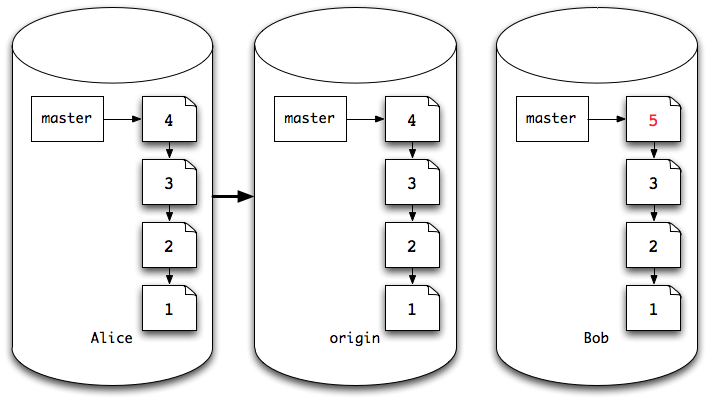
Bob can't push to origin master
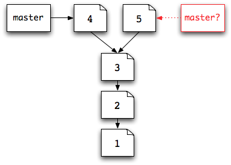
This is non-fast forward
master can't be both the state given by commit 4 AND commit 5
unless...
Bob fetches, then merges
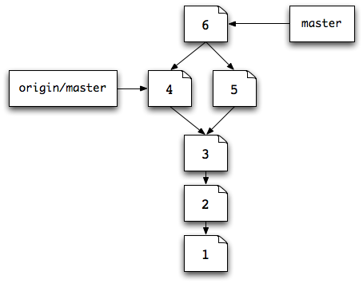
A "merge commit" is created that reconciles the differences
A merge commit has 2 parents
Now he can push - commit 6 is "fast forward" from 4
At this point...
I'm really hoping the physical wireframing worked...
What else could Bob have done?
Rebase